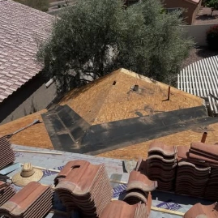
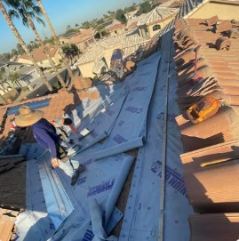

Are the materials specified?
Ask about the roofing assembly, underlayment type, flashing and ventilation approach, and any manufacturer information relevant to the bid.
A better estimate starts with accurate information and a clear written scope.
Request a Free Estimate →One clear, comparable written scope is worth more than several verbal price guesses.
Ask about the roofing assembly, underlayment type, flashing and ventilation approach, and any manufacturer information relevant to the bid.
Request allowances for hidden damage and a clear written change-order process so unexpected findings do not become an open-ended cost.
Discuss site cleanup, final walk-through, before-and-after records, warranty documents if offered, and how final payment is handled.
Need a roof-specific answer? Request an inspection and ask for a written scope before approving work.
Talk with Galan RoofingA better estimate starts with accurate information and a clear written scope.
Prepare the address, approximate property age, roof type if known, and a description of where the problem appears.
Describe interior stains, recent storms, missing tiles, prior repairs, or recurring leaks; photos can help but never risk climbing onto the roof.
Ask whether the proposal includes tear-off, underlayment, flashing, decking allowances, debris removal, permits, disposal, cleanup, and a written warranty.
An online planner only maps scope. Site conditions, accessibility, layers, materials, and scope are what a formal written estimate is built from — after an on-roof inspection.
General educational information only. Roofing work requires a qualified inspection and project-specific recommendations. Verify current license status with Arizona ROC.
Request a Roofing Estimate →
Protect your home with expert installation and repairs.
Learn More →
Reliable roofing for businesses of all sizes.
Learn More →
Find and fix roof problems before they grow.
Learn More →
Replace aging roofs with a stronger system.
Learn More →
Preventative care for Arizona roofs.
Learn More →Get clarity on condition, leaks and next steps.
Learn More →Still have questions? Speak directly with Galan Roofing.
Ask Our Team →Residential and commercial roof inspections, maintenance, leak detection, repairs and re-roofing. Contact the team about your specific roof system.
Galan Roofing's published HomeAdvisor listing indicates free project estimates. Confirm current availability by calling their team.
No. The planner maps your project scope only — it never shows a price. Galan Roofing inspects the property first, then provides its own written estimate.
The published license number is ROC 330841. Check its current status using the Arizona Registrar of Contractors before hiring; third-party listings show a September 2026 expiration date.
Galan Roofing is based in Phoenix, Arizona. Contact the company to confirm coverage for your exact address.
Tell Galan Roofing what your property needs.